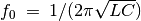
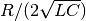
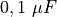
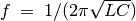

Réponse transitoire de circuit RLC¶
Objectif
Explorer la nature oscillatoire de la mise en série de L et C. La fréquence de résonance d’un circuit LC série est donnée par . Le facteur d’amortissement est , et il vaut 1 pour l’amortissement critique (http://en.wikiversity.org/wiki/RLC_circuit). Selon les valeurs de C/L et R, la réponse peut être sous-amortie, amortie de façon critique ou sur-amortie.


Procédure
- Commencer avec le bobinage et un condensateur de 
- Cliquer sur Échelon 5->0 V. Ajuster l’axe des abscisses et recommencer si nécessaire.
- Ajuster le graphique (FIT) pour trouver la fréquence de résonance et l’amortissement.
- Recommencer avec une résistance entre OD1 et le bobinage.
- Recommencer l’expérience avec diverses valeurs de R, L et C.
Discussion
On a utilisé le bobinage de 3000 tours et le condensateur de .La tension aux bornes du condensateur est montrée sur la figure après un échelon 5->0 V. La fréquence de résonance mesurée est conforme à , compte tenu de la tolérance sur les valeurs des composants.